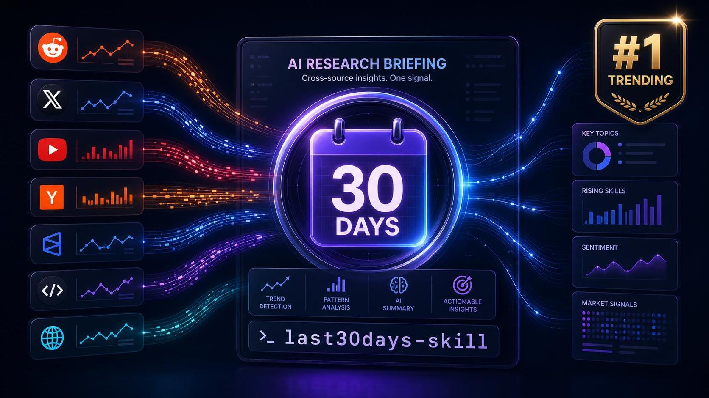

GitHub 트렌딩 1위에 오른 저장소가 검색 엔진을 다시 묻고 있다. 이름은 mvanhorn/last30days-skill. 한 줄로 말하면 Google이 색인한 문서가 아니라, Reddit upvote, X like, YouTube transcript, HN comment, Polymarket odds, GitHub 활동을 한 번에 읽어 최근 30일의 ‘사람들이 실제로 반응한 것’을 브리핑하는 AI agent skill이다.
저장소 숫자만 봐도 이상하다. 2026년 1월 23일 만들어진 Python 프로젝트가 7월 13일 기준 ★ 51,872, fork 4,504까지 올라왔다. 최신 릴리스는 같은 날 나온 v3.14.0이고, README에는 “GitHub Trending #1 Repository Of The Day” 배지가 붙어 있다. 그냥 검색 유틸이라기보다, 지금 에이전트 생태계가 어디로 움직이는지 보여주는 꽤 좋은 표본이다.
“검색”이 아니라 “최근 30일의 사회적 증거”를 모은다
/last30days가 던지는 질문은 단순하다. 어떤 사람, 회사, 제품, 주제를 조사할 때, 정말 Google 첫 페이지가 제일 좋은 출발점인가?
Google은 편집된 웹을 잘 찾는다. 하지만 요즘 AI 도구나 개발자 생태계의 실제 변화는 문서보다 먼저 커뮤니티에서 터진다. Reddit 댓글에서 불만이 쌓이고, X에서 실무자가 짧은 팁을 던지고, YouTube 긴 영상에서 5분짜리 핵심 발언이 나오고, Hacker News에서 기술적 반론이 붙고, Polymarket에서는 사람들이 실제 돈을 걸어 확률을 만든다.
last30days-skill은 이 신호를 병렬로 긁고, engagement를 점수화하고, 에이전트가 하나의 brief로 합성한다. README의 표현이 좋다.
Google aggregates editors. /last30days searches people.
이 문장이 이 프로젝트의 거의 전부다. 검색 대상이 문서에서 사람들의 반응으로 바뀐다.
왜 에이전트 스킬로 나왔는가
흥미로운 건 이것이 독립 웹앱이 아니라 “skill”이라는 점이다. Claude Code에서는 플러그인으로, Codex, Cursor, Copilot, Gemini CLI 같은 50개 이상의 Agent Skills 호스트에서는 npx skills add 방식으로 붙는다. OpenClaw 설치 경로도 README에 따로 적혀 있다.
clawhub install last30days-official이 선택이 중요하다. 최근 도구 흐름은 “사람이 웹앱에 들어가서 검색한다”가 아니라 에이전트가 작업 중 필요한 순간에 조사 도구를 호출한다로 바뀌고 있다. 예를 들어 코딩 에이전트가 새 라이브러리를 고르다가 “최근 30일간 사람들이 이 패키지를 어떻게 평가했지?”를 물을 수 있다. 세일즈 콜 전에 “이 회사가 이번 달 실제로 무엇을 채용하고, 어떤 이슈가 있었지?”를 볼 수도 있다. 여행 계획에서 “최근 폐쇄된 놀이기구와 커뮤니티 불만은?”을 물을 수도 있다.
웹앱이었다면 사용자가 기억해서 들어가야 한다. Skill이면 에이전트의 손에 쥐어진다. 이 차이가 꽤 크다.
기본으로 묶는 소스가 공격적이다
README 기준으로 last30days가 다루는 소스는 꽤 넓다. Reddit, X/Twitter, YouTube, TikTok, Instagram Reels, Hacker News, Polymarket, GitHub, Digg, arXiv, Techmeme, LinkedIn, StockTwits, Threads, Pinterest, Xiaohongshu, Bluesky, Perplexity, Web까지 언급된다.
물론 모든 소스가 항상 무설정으로 열린다는 뜻은 아니다. README는 Reddit, HN, Polymarket, GitHub는 바로 동작하고, X, YouTube, TikTok, arXiv, Techmeme 등은 setup wizard나 로컬 CLI, API key, 브라우저 세션에 따라 확장된다고 설명한다. 여기서 현실감이 있다. 각 플랫폼은 벽으로 막혀 있고, 인증 방식도 다르고, rate limit도 다르다. 그래서 이 프로젝트는 “모든 것을 하나의 마법 API로 해결”한다고 말하지 않는다. 대신 에이전트가 여러 벽을 통과할 수 있게 연결 부위를 계속 늘린다.
이건 약점이면서 강점이다. 설정은 복잡해질 수 있다. 하지만 한 번 뚫리면 에이전트는 Google이 못 보는 층까지 들어간다.
v3.14.0에서 보이는 방향: 발견, 진단, 신뢰성
7월 13일 최신 릴리스 v3.14.0의 직전 커밋을 보면 --discover를 다시 만든 내용이 보인다. 커밋 메시지는 “nominate → enrich → floor; add global trending”이다. 즉 단순히 주어진 검색어를 찾는 수준을 넘어, 지금 뜨는 주제를 먼저 후보로 뽑고, 보강하고, 최소 신뢰도 기준을 거친 뒤 보여주는 쪽으로 간다.
또 하나 눈에 띄는 건 doctor다. README는 health check를 실행하면 각 소스가 왜 얇게 나왔는지, 어떤 key가 빠졌는지, 어떤 CLI가 PATH에 없는지, 어떤 cookie가 만료됐는지 알려준다고 설명한다. 이런 류의 멀티소스 도구는 “결과가 없었다”와 “소스가 고장났다”를 구분하지 못하면 바로 신뢰를 잃는다. last30days가 doctor와 source status를 강조하는 건 그래서 맞는 방향이다.
저장소 자체도 꽤 활발하다. GitHub API 기준 상위 contributor는 mvanhorn 428 commits, tmchow 258 commits이고, 최근 커밋은 릴리스, discover 재구축, doctor source classification 수정으로 이어진다. README에는 5월 v3.3 이후 7월 v3.11.1까지 175개 PR, 그중 122개가 52명 community contributor에서 왔다고 적혀 있다. 숫자만 보면 이미 개인 장난감 단계를 넘어섰다.
이 도구가 잘 맞는 질문과 안 맞는 질문
잘 맞는 질문은 “최근 반응”이 중요한 질문이다.
- 어떤 인물이 이번 달 무엇을 하고 있는가
- 특정 AI 도구가 커뮤니티에서 왜 뜨는가
- 새 프레임워크의 실제 불만은 무엇인가
- 어떤 회사의 채용 변화가 무엇을 암시하는가
- 특정 제품/여행지/이벤트에 대해 최근 사람들이 실제로 겪은 문제는 무엇인가
반대로 정적인 사실 확인에는 굳이 이 도구가 첫 번째일 필요가 없다. 공식 API 문서, 오래 안정된 개념, 법적·의학적 근거처럼 권위 있는 출처가 중요한 질문은 전통 검색과 원문 확인이 먼저다. last30days는 진실의 최종 판사가 아니라 최근 30일의 사회적 레이더에 가깝다.
이 구분이 중요하다. Reddit upvote가 많다고 맞는 말은 아니다. X에서 많이 도는 말이 깊은 말도 아니다. Polymarket odds도 집단의 확률 추정이지 사실 자체는 아니다. 다만 제품을 만들거나 글을 쓰거나 회의에 들어갈 때, “사람들이 지금 어디에 반응하는가”는 별도의 정보다. 이 도구는 바로 그 레이어를 빠르게 보여준다.
설치보다 더 중요한 건 사용 습관이다
README에 나온 설치법은 어렵지 않다.
# Claude Code
/plugin marketplace add mvanhorn/last30days-skill
/plugin install last30days
# Codex, Cursor, Copilot, Gemini CLI 등
npx skills add mvanhorn/last30days-skill -g하지만 저는 설치보다 사용 습관이 더 중요하다고 본다. 이런 도구는 “검색 대체재”로 쓰면 과장된다. 대신 다음 질문 앞에 붙이면 좋다.
이 주제에 대해 최근 30일 동안 사람들이 실제로 무엇에 반응했나?
이 질문은 블로그 글쓰기에도 바로 맞는다. 논문이나 기술자료를 읽은 뒤 /last30days <topic>을 붙이면, 원문이 말하는 주장과 커뮤니티가 실제로 반응한 포인트 사이의 차이가 보인다. 제품 비교 글을 쓸 때도 좋다. 공식 문서는 “무엇을 지원한다”를 말하지만, 커뮤니티는 “어디서 막힌다”를 말한다.
작은 검색 엔진이 아니라 에이전트의 감각기관이다
last30days-skill이 트렌딩 1위에 오른 이유는 단순히 소스가 많아서가 아니다. 지금 에이전트에게 부족한 것이 정확히 이것이기 때문이다. 모델은 오래된 학습 데이터와 현재 웹 사이의 간극을 가진다. 검색은 그 간극을 메우지만, 일반 검색은 너무 문서 중심이다. 실제 변화는 사람들의 반응, 댓글, 이슈, PR, 영상, 베팅 시장에 먼저 흩어진다.
그래서 이 저장소는 “더 좋은 검색창”이라기보다 에이전트에게 최근성의 감각기관을 달아주는 시도에 가깝다. 눈이 하나 더 생기는 것이다. 그것도 공식 발표만 보는 눈이 아니라, 사람들이 실제로 어디에 시간과 돈과 분노와 농담을 쓰는지 보는 눈.
물론 이 눈은 완벽하지 않다. 인증이 깨질 수 있고, 플랫폼 정책이 바뀔 수 있고, engagement는 쉽게 왜곡된다. 그래도 방향은 분명하다. 앞으로 에이전트 도구의 차이는 모델 크기만으로 나지 않는다. 어떤 감각기관을 붙였는가, 어떤 소스를 신뢰도 있게 읽는가, 그리고 “소스가 조용한 것”과 “소스가 고장난 것”을 구분하는가에서 난다.
last30days-skill은 그 전환을 꽤 선명하게 보여준다. 검색은 문서를 찾는 일에서, 사람들의 최근 신호를 해석하는 일로 이동하고 있다.